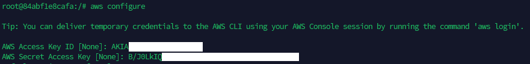
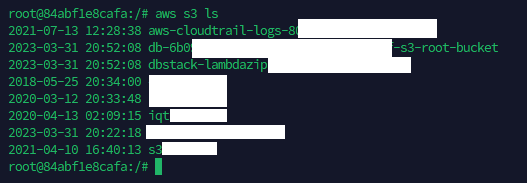
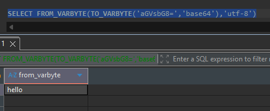

Redshift integrator setup¶
Operator setup for an Amazon Redshift target in ELTMaestro — JDBC connection, the S3 + AWS-credentials wiring the file loader needs, native base64 decode, the per-integrator system.cfg, and a verification checklist. Companion to CLICKHOUSE-AUTH.md; same operator-doc shape.
Redshift is one of the catalog-backed cloud platforms (see FUNCTION-CATALOG-MIGRATION.md for the function-metadata side). Loads go flat file → S3 → Redshift COPY, so an S3 bucket and AWS credentials are part of the setup, not optional.
At a glance — what you need¶
| Prerequisite | Detail |
|---|---|
| Redshift cluster or Serverless workgroup | Reachable host/port from the engine host; a database + schema for the integrator (defaults dev / integrator, see system.cfg). Both cluster types use the same job/config — see Running on Redshift Serverless. |
| Redshift JDBC driver | redshift-jdbc42-2.1.0.33.jar shipped under $MAESTRO_ENGINE_HOME/library/JDBC/; driver class com.amazon.redshift.Driver. |
| S3 bucket | A bucket the engine host can write to; referenced in the loader's upload/copy commands via $AWS_BUCKET. |
| S3 connection | An ELTMaestro S3/cloud connection named S3_CONNECTION; system.cfg $OBJECT_STORAGE=S3_CONNECTION resolves to it. |
| AWS CLI | Installed and configured on the engine host for the engine's OS user (aws configure → access key / secret / region). The loader's upload/copy/delete run as aws s3 cp / aws s3 rm shell commands on the server. |
| AWS credentials | An ~/.aws/credentials file on the engine host (written by aws configure) — used by the aws s3 staging commands. Preferred for COPY is an IAM role (iam.role on the S3_CONNECTION); access-key/secret are the fallback. |
| IAM permissions | The credentials/role must allow s3:PutObject/GetObject/DeleteObject on the bucket and Redshift COPY from S3. |
| base64 decode | Native — no UDF to install. $B64EXPRESSION uses Redshift's FROM_VARBYTE(TO_VARBYTE(…,'base64'),'utf-8'). See base64 decode. |
1. Create the Redshift JDBC connection¶
In the WPF client, navigate Administration ▸ Configure Maestro Server to open the Admin Interface (admin-role users only), select the Database Connections tab, then click Create (or select a row and Edit) to open the JDBC connection editor (SysJdbcSetting). Fill in the fields below — including the SSL connection string from the gotcha. The connection is persisted to the audit DB table t_jdbc (connection_name, connection_string, jdbc_driver_name, user_name, password64 (base64), jdbc_driver_jar).
| Field | Value |
|---|---|
| Driver class | com.amazon.redshift.Driver |
| Driver jar | redshift-jdbc42-2.1.0.33.jar (from the getJdbcJarFileNames list) |
| Connection string | Recommended: jdbc:redshift://$HOST:$PORT/$DATABASE?ssl=true&sslfactory=com.amazon.redshift.ssl.NonValidatingFactory. The bare jdbc:redshift://$HOST:$PORT/$DATABASE only works where SSL isn't enforced. |
| User / Password | Redshift DB user + password (password stored base64). |
Gotcha — driver class: use
com.amazon.redshift.Driver(the single class the modern 2.x driver registers). The legacy…jdbc41.Driver/…jdbc42.Driverclass names only exist in pre-1.2 jars and throwClassNotFoundExceptionagainst the shippedredshift-jdbc42-2.1.0.33.jar.Gotcha — use
NonValidatingFactory: Redshift requires TLS, so when creating the JDBC job append?ssl=true&sslfactory=com.amazon.redshift.ssl.NonValidatingFactoryto the connection string.NonValidatingFactoryskips server-certificate-chain validation, which avoids SSL handshake / "unable to find valid certification path to requested target" failures without having to import the Redshift CA into the engine host's Java truststore.
A new JDBC driver jar (if you swap versions) must be added to root-engine-install/jdbc_list.json and the image rebuilt / tarball republished — see CONVENTIONS.md.
2. Create the S3 connection + AWS credentials¶
The Redshift loader stages flat files to S3 before COPY, using the aws s3 CLI on the engine host. Three pieces:
- AWS CLI on the engine host — install the AWS CLI and run
aws configurefor the OS user the engine runs as (access key, secret key, default region). The loader's upload/copy/delete (aws s3 cp/aws s3 rm) run as shell commands on the server, so they authenticate through this.aws configurealso writes the~/.aws/credentialsfile the loader parses below.

Verify the CLI can reach S3 with aws s3 ls — it should list your buckets:

- S3 connection — create the cloud/S3 connection referenced by
system.cfg$OBJECT_STORAGE(S3_CONNECTION), pointing it at your bucket. Step-by-step (the Aws S3 connection type and itsbucket.name/access.key/secret.key/aws.region/iam.role/dir.dataparameters) is in the user guide: Setting up an Aws S3 connection. - AWS credentials on the engine host — place an
~/.aws/credentialsfile for the OS user the engine runs as so theaws s3staging commands authenticate. (TheRedshiftStage/group-loaderCOPYdefaults to IAM role —iam_role '$iam.role'from theS3_CONNECTION— with access-key/secret as theisIAM=falsefallback.)
Linking the IAM role: cluster ↔ S3 connection ↔ JDBC user¶
The iam.role ARN you set on S3_CONNECTION is the role Redshift assumes to read the staged file during COPY. For COPY to accept it, that one ARN has to be wired to both the cluster and the database user on the Redshift JDBC connection:
- Owned by the cluster's AWS account + attached to the cluster. The role's account ID must match the cluster's account, and the role must be associated with the cluster (console Properties ▸ Associated IAM roles, or
aws redshift modify-cluster-iam-roles). List the valid ARNs with: Use one returned withApplyStatus: in-sync. A placeholder or foreign-account ARN fails with Invalid IAM Role ARN … Role needs to be owned by the same account with cluster — and note the shipped defaultarn:aws:iam::123456789100:role/spectrum_roleis a placeholder (account123456789100is a dummy), so it must be replaced. - Granted for
COPYto the JDBC connection's database user. The Redshift DB user that the JDBC connection logs in as must be allowed to assume that role for loads: Without this grant the same (correctly attached) role still fails with not authorized to assume role. Superusers can assume any attached role implicitly; regular users need the explicitASSUMEROLE … FOR COPYgrant. - S3 read on the role. The role's IAM policy must allow
s3:GetObject/s3:ListBucketon the staging bucket.
In short: the ARN on
S3_CONNECTIONmust be a role the cluster owns and has attached, and one the JDBC connection's database user is grantedASSUMEROLE … FOR COPY. Miss the first → Invalid IAM Role ARN / wrong account; miss the second → not authorized to assume role.
Running on Redshift Serverless¶
The same jobs, system.cfg, S3 connection, COPY command, base64 decode, and JDBC driver run unchanged on Redshift Serverless — ELTMaestro makes no cluster control-plane calls, and the COPY … IAM_ROLE 'arn' syntax is identical. Only three pieces of operator wiring differ:
| Aspect | Provisioned cluster | Redshift Serverless |
|---|---|---|
JDBC endpoint ($HOST) |
<cluster>.<id>.<region>.redshift.amazonaws.com:5439 |
<workgroup>.<account-id>.<region>.redshift-serverless.amazonaws.com:5439 (port stays 5439) |
| IAM role discovery | aws redshift describe-clusters --query "Clusters[].IamRoles" |
aws redshift-serverless get-namespace --namespace-name <ns> --query "namespace.iamRoles" |
| IAM role attachment | attach to the cluster (console Properties ▸ Associated IAM roles, or aws redshift modify-cluster-iam-roles) |
associate to the namespace (console Namespaces ▸ [ns] ▸ Security and encryption ▸ IAM roles, or aws redshift-serverless update-namespace --namespace-name <ns> --iam-roles <arn> [<arn> …]) |
Everything else is identical to provisioned — no separate config or job:
- JDBC driver (MPP_Driver_Redshift_RSJDBC.jar, com.amazon.redshift.Driver) and connection-string shape — just point $HOST at the workgroup endpoint.
- The S3_CONNECTION + its iam.role, and the COPY … iam_role '$iam.role' command.
- The GRANT ASSUMEROLE ON '<arn>' TO "<db_user>" FOR COPY; grant (Linking the IAM role) — same on Serverless.
- base64 decode is native — and this is load-bearing for Serverless: Serverless has no Python (plpythonu) UDF support, so the native FROM_VARBYTE(TO_VARBYTE(…)) form (§3 below) is the only way base64 works there — the legacy UDF form would fail outright.
- $QUERY_VACUUM is a no-op select (Serverless forbids manual VACUUM; auto-vacuum handles maintenance on both cluster types).
Known caveat (schema browse):
get_column_names_from_tablereadspg_table_deffor distkey/sortkey flags. Serverless has no user-visible distribution/sort keys; if that catalog view is unavailable there, Load Known Structure may fall back to theinformation_schema-only column path (distkey/sortkey/identity reported as FALSE, which is correct for Serverless). Columns still resolve viainformation_schemaregardless. Verify against your workgroup.
3. base64 decode (native, no UDF)¶
base64-stored columns are decoded with Redshift's native VARBYTE functions — there is nothing to install on the cluster. system.cfg sets:
TO_VARBYTE($COLUMN,'base64') decodes the base64 string to bytes, FROM_VARBYTE(…,'utf-8') turns those bytes back into UTF-8 text, and ::$DATATYPE casts to the column's type. Verify on the cluster (returns hello):

Why native: nothing to install or maintain on the cluster, and it avoids the end-of-support of Amazon Redshift Python UDFs after 2026-06-30 (new ones blocked from Patch 198). The previous
integrator.b64_decode($COLUMN)::$DATATYPEform is kept commented insystem.cfgfor rollback only.Note:
FROM_VARBYTEreturnsVARCHAR(≤ 65,535 bytes) — the same practical limit as the old UDF, so no regression for decoded values within that size.
Integrator config (system.cfg)¶
root-engine-install/db/metadata/integrators/redshift/system.cfg is the per-platform template. Edit the Settings section for your environment; leave the "do not modify" SQL templates alone.
| Variable | Purpose |
|---|---|
$SYSTEM_DEFAULT_DATABASE / $SYSTEM_DEFAULT_SCHEMA |
Default db (dev) / schema (integrator). |
$SYSTEM_TOKEN_ENCLOSER |
Identifier quote char ("). |
$MAX_CACHE_SIZE, $SCHEMALOADERPARTSIZEBYTES, $SYSTEM_LARGE_OBJECT_ROWS, $SYSTEM_VIEW_MATERIALIZATION_THRESHOLD, $SYSTEM_STATISTICS_THRESHOLD |
Cache / partition / materialization / statistics tuning. |
$HASH_TEMPLATE / $HASH_RETURNS / $HASH_EXPRESSION |
SCD-step hashing (NVL(MD5($ARG::TEXT),'') → CHAR(32)). |
$QUERY_* (do not modify) |
Operation templates: ANALYZE/VACUUM/TRUNCATE, CDC delete+insert, CTAS, view create, drop table/view, preview, cache builder. |
$QUERY_ALTER_COLUMN / $QUERY_ADD_COLUMN |
DDL for data-type changes. |
$B64EXPRESSION |
Native base64-decode expression FROM_VARBYTE(TO_VARBYTE($COLUMN,'base64'),'utf-8')::$DATATYPE — no UDF, see base64 decode. |
$OBJECT_STORAGE |
The S3 connection name (S3_CONNECTION). |
Metadata introspection¶
The WPF Schema Browser (e.g. the loader's Load Known Structure button) populates databases/schemas/tables/columns by running the get_* templates in the integrator folder against your Redshift connection (via MaestroMeta SOAP ops):
| Template | Query |
|---|---|
get_database_names |
select current_database(); |
get_schema_names / get_table_names / get_view_names |
information_schema lookups scoped by $DATABASE / $SCHEMA. |
get_column_names_from_table |
Rich column query — resolves type, and flags is_dist (distkey), is_sort (sortkey), is_identity, is_key (pkey) via pg_table_def + catalog joins. |
get_preview_query |
SELECT * FROM "$SCHEMA"."$TABLE" LIMIT $LIMIT |
File-loader flow (RSFileLoader)¶
The Redshift file loader stages a flat file to S3 and COPYs it into the target table. Source can be Local, SFTP, or Onstage (auto-selected from the upstream step). Three commands, each validated in the dialog before save:
| Command | What it does | Must reference |
|---|---|---|
Upload (uploadCommand) |
Local/staged file → S3. Default from $AWS_DEFAULT_UPLOAD_COMMAND. |
$AWS_BUCKET, $GUID, $FILENAME, $LOCALFILE |
Copy (copyCommand) |
S3 → Redshift COPY into the target table. Default from copyCommandTemplate. |
$AWS_BUCKET, $GUID, $FILENAME, $TARGET |
Delete (deleteCommand) |
Cleans the staged S3 object after load. Default from $AWS_DEFAULT_DELETE_COMMAND. |
$AWS_BUCKET, $GUID |
$GUID scopes the staged object to the run; $FILENAME/$LOCALFILE are the target/local file names; $TARGET is the destination table. The dialog blocks save until each command references its required variables.
Verify¶
- Connection — open the Redshift connection; the editor's test should connect with
com.amazon.redshift.Driver. - Schema browse — Load Known Structure lists tables and resolves columns (distkey/sortkey/identity/key flags) → confirms the
get_*templates run. - base64 decode —
SELECT FROM_VARBYTE(TO_VARBYTE('aGVsbG8=','base64'),'utf-8')returnshello. - Loader job — run a file-loader job end to end; confirm the object lands in S3,
COPYpopulates the table, and the delete command cleans up.
Common failures¶
| Symptom | Cause / fix |
|---|---|
ClassNotFoundException on connect |
Legacy driver class — use com.amazon.redshift.Driver. |
Invalid IAM Role ARN … Role needs to be owned by the same account with cluster |
The iam.role on S3_CONNECTION is a placeholder or from another AWS account (the shipped default …123456789100…/spectrum_role is a placeholder). Set it to an in-sync ARN from aws redshift describe-clusters … IamRoles, owned by the cluster's account — see Linking the IAM role. |
COPY "not authorized to assume role" (ARN is correct + attached) |
The Redshift DB user on the JDBC connection lacks the ASSUMEROLE grant: GRANT ASSUMEROLE ON '<arn>' TO "<db_user>" FOR COPY; — see Linking the IAM role. |
COPY "access denied" / "not authorized to assume role" |
The iam.role on the S3_CONNECTION isn't attached to the cluster or lacks S3 read (IAM mode); or the access-key/secret are wrong (keys mode). |
| Dialog won't save the loader | A command is missing a required $-var ($AWS_BUCKET/$GUID/$FILENAME/$TARGET) — see the table. |
COPY access denied |
IAM/credentials lack S3 read or Redshift COPY-from-S3 rights. |
base64 column not decoding / FROM_VARBYTE/TO_VARBYTE error |
$B64EXPRESSION should be the native form FROM_VARBYTE(TO_VARBYTE($COLUMN,'base64'),'utf-8')::$DATATYPE. The legacy integrator.b64_decode Python UDF is no longer required — see base64 decode. |